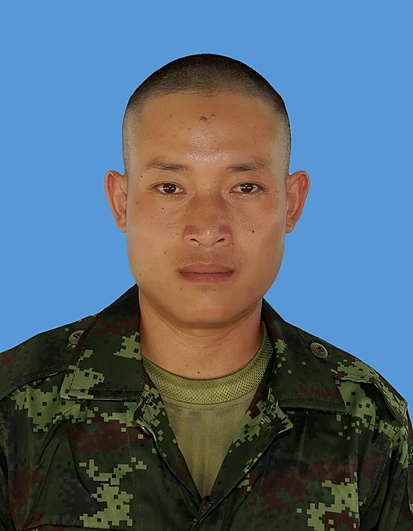

พลฯ โชคชัย พัฒนาพรพรหม
ข้อมูลทั่วไป
เลขที่9
ชื่อเล่นโชค
รหัสประจำตัวประชาชน1509600014225
อายุ21
วัน/เดือน/ปีเกิด1948-05-10 00:00:00
เชื้อชาติไทย
สัญชาติไทย
ศาสนาคริส
ภูมิลำเนาทหาร
บ้านเลขที่47
หมู่ที่13
ตำบลบ้านทับ
อำเภอแม่แจ่ม
จังหวัดเชียงใหม่
ข้อมูลครอบครัว
บิดาธนงค์ พัฒนาพรพรหม
มารดามาลัย พัฒนาพรพรหม
ภรรยา-
ข้อมูลร่างกาย
ส่วนสูง (ซม.)162
น้ำหนัก (กก.)62
BMI23.9
หมู่โลหิต-
โรคประจำตัวความดันสูง
ตำหนิ/แผลเป็นนิ้วชี้ซ้าย
การศึกษาและอาชีพ
วุฒิการศึกษาป.6
อาชีพก่อนเป็นพลทหารเกษตรกร
ความสามารถพิเศษทำกับข้าว
การเข้ารับราชการ
วันเข้าประจำการ1969-11-03 00:00:00
ระยะเวลาประจำการ2 ปี
ร้องขอ/จับจับ
กลุ่มเสี่ยง-
การติดต่อ
เบอร์โทรส่วนตัว0-929793511
เบอร์โทรญาติ0-800235537
อื่นๆ
คดีความไม่มี
ความเป็นอยู่/ปัญหาทางบ้านไม่มีปัญหา